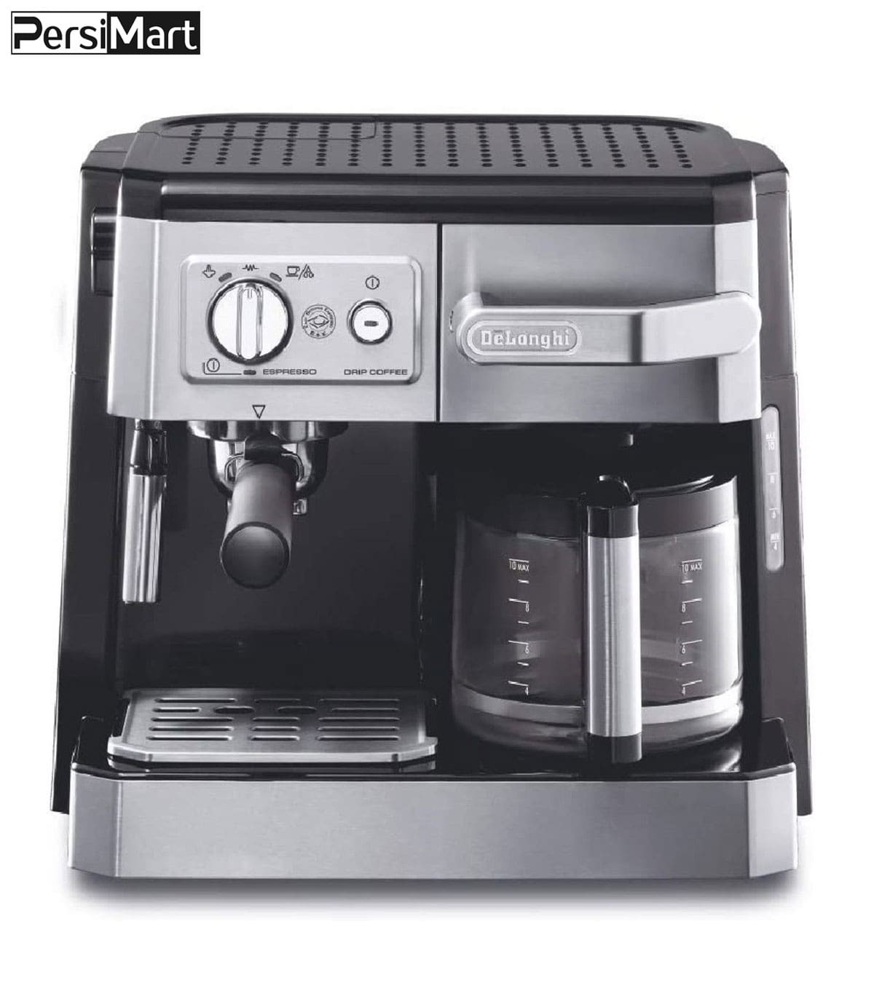

- Coffee-maker-Delonghi-model-bco420 
- Agrin oil-free fryer
The DeLonghi BCO 420 espresso machine is an excellent and high-quality espresso machine with a steel body. This device can prepare French coffee, cappuccino and espresso. To prepare French coffee, there is a separate coffee and water tank on the left side of the machine. There is a permanent filter inside the French coffee tank and it can be easily removed using its handle. It is possible to prepare 10 cups of French coffee after each brewing time in this device. In the espresso part of this machine, it is possible to pour powder or put a special pad. Also, this product has a warming plate for 10 cups. There is a drip tray under the espresso nozzle, and it is possible to prepare milk foam and boiling water with this model. In total, this model has a power consumption of 1750 watts and can be a suitable option for coffee lovers.

Gosonic GAF-758 oil-free fryer is one of the professional and efficient frying devices in the market. This fryer with 1750 watts power consumption and 8 liter capacity allows you to fry food without using oil. This device offers eight cooking programs with an adjustable temperature of up to 200 degrees Celsius. Also, with the 60-minute timer, you can adjust the cooking time. The monitor features of this fryer are also excellent. With the removable and installable non-stick inner cover, the device is very easy to clean. Also, it has internal equipment that allows you to carry out the cooking process. Gosonic GAF-758 oil-free fryer has a touch screen that shows you all the points. The wire length of this device is 50 cm. By preparing food for frying without oil, you can prepare healthy and delicious food with the least amount of oil. This device with a frying pan and a new design allows you to observe the cooking of food.